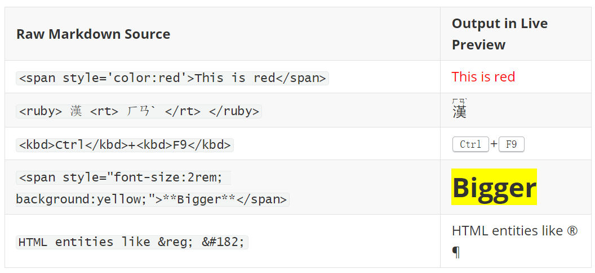
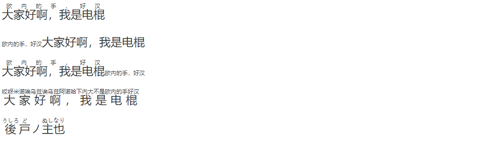

为了便于阅览，我将该文章分成若干部分，汇总如下：

可使用的 HTML 标签
以下 HTML 标签可直接内联显示在 Typora 中：
| Raw Markdown Source | Output in Live Preview |
|---|---|
<span style='color:red'>This is red</span> |
This is red |
<ruby> 漢 <rt> ㄏㄢˋ </rt> </ruby> |
漢 |
<kbd>Ctrl</kbd>+<kbd>F9</kbd> |
Ctrl+F9 |
<span style="font-size:2rem; background:yellow;">**Bigger**</span> |
Bigger |
HTML entities like ® ¶ |
HTML entities like ® ¶ |

手动 / 强制断页
标题前自动断页请看 Typora 学习索引 - 样式篇 - 标题前自动分页。
那么，如何实现像 $\LaTeX$ 里面的 \newpage 那样手动断页呢？
1 | <div style="page-break-after: always; break-after: page;"></div> |
上面这一行就可以搞定了。这一段 HTML 在编辑器里会显示空白，但是导出为 PDF 之后，PDF 就会在这里另起一页。
另外，官方文档中还提到很多其他的手动强制分页方式，个人觉得作用不大，就先贴在这里吧：
HTML and Central CSS
If manual page breaks are needed frequently, it makes more sense to use an external stylesheet for better maintenance and less clutter.
2
3
4
5
6
7
8
9
10
11
12
13
14
15
16
17
18
19
20
21
22
<div class="page-break"></div>
Markdown continues.
<p>Markdown with embedded HTML:</p>
<div class="page-break"></div>
<p>Markdown continues.</p>
/* completely hide the element where it is not needed */
.page-break
{
display: none;
}
@media print, (overflow-block: paged) or (overflow-block: optional-paged)
{
.page-break
{
display: block;
page-break-after: always; /* CSS 2 */
break-after: page; /* CSS 3+ */
}
}Thematic Breaks
Alternatively, existing Markdown structure can be repurposed. This way, neither HTML nor CSS is necessary within the Markdown file at all.
There are three ways to insert a thematic break in Markdown, using three or more asterisks
*, hyphens-or underscores_, possibly with whitespace in between them. They all result in the same HTML (or PDF) output, which can then be used to create page breaks. Basically all Markdown presentation packages follow this convention as well, inserting a slide transition for every thematic break.
2
3
4
5
6
7
8
9
10
11
12
13
14
15
16
17
18
19
20
* * *
in between breaks
----
still one more to come
___________
after the final break.
<p>Break incoming</p>
<hr>
<p>in between breaks</p>
<hr>
<p>still one more to come</p>
<hr>
<p>after the final break.</p>The only thing required is some custom CSS.
2
3
4
5
6
7
8
9
10
{
hr
{
page-break-after: always; /* CSS 2 */
break-after: region; /* CSS 3+ */
/* minimal layout disruption: */
height: 0.1mm; visibility: hidden;
}
}
对齐方式
居中：<center>标题</center>
HTML 样式 中提到：“有若干的标签和属性是被废弃的。被废弃（Deprecated）的意思是在未来版本的 HTML 和 XHTML 中将不支持这些标签和属性。”这其中就有 <center>。因此我们可以使用 <h1 style="text-align:center">标题</h1> 来替代。
应该避免使用下面这些标签和属性：
| 标签 | 描述 |
|---|---|
<center> |
定义居中的内容。 |
<font> 和 <basefont> |
定义 HTML 字体。 |
<s> 和 <strike> |
定义删除线文本 |
<u> |
定义下划线文本 |
| 属性 | 描述 |
| align | 定义文本的对齐方式 |
| bgcolor | 定义背景颜色 |
| color | 定义文本颜色 |
左对齐（可以在 Typora 设置首行缩进时使用）：<div style="text-align: left">敬礼！</div>
右对齐：<div style="text-align: right">2023年1月5日</div>
文字颜色与背景颜色
Bang! Bang! Banki Banki Seiki Banki!

1 | <span style="font-size:2rem; background:yellow; color:red;">**Bang! Bang! Banki Banki Seiki Banki!**</span> |
——感觉不如 Obsidian 的“增强编辑”插件方便。
锚点
锚点是 Typora 所支持的 GitHub Flavored Markdown（简称GFM）扩展语法中的一个有意思的功能，这是个用于在文档中实现 跳转 的操作，非常实用。在导出的 PDF 里也能愉快地运行。
锚点的语法是：[<任意内容>](#锚点名)
（1）锚点名可以是标题：比如你现在想回过头来看对齐方式这一节
1 | [比如你现在想回过头来看对齐方式这一节](#对齐方式) |
这可以用于跳转到任意标题处，进一步可以用来制作一份（可能）适用于其他编辑器的目录 TOC（反正 Obsidian 不行）。
（2）除跳转到标题之外，锚点还可以用于跳转到任意位置，这就需要借助 HTML 中的 id 属性了：
tag1：这里你想 写啥就写 啥，就连 md语法 也能给 你一并实 现
tag2：重点是要设置一个 id 键值对，标签是啥无所谓
1 | <span id="tag1">tag1：这里你想 **写啥就写** 啥，就连 ==md语法== 也能给 <u>你一并实</u> 现</span> |
然后使用锚点：跳转到tag1 跳转到tag2 跳转到tag3
1 | [跳转到tag1](#tag1) [跳转到tag2](#tag2) [跳转到tag3](#tag3) |
不好意思，HTML 块标签在 Typora 中无法参与跳转……但是导出的 PDF 和 Hexo 中都可以实现 tag3 的跳转，很神奇。
（3）同样可以使用 HTML 来设置锚点：tag2 <a href="#tag2">tag2</a>
难受的是 Obsidian 和知乎应该都没法使用这个操作……
中日注音
大家好啊，我是电棍
大家好啊，我是电棍
大家好啊，我是电棍
大家好啊，我是电棍
後戸ノ主也

1 | <ruby>大家好啊，我是电棍<rt>欧内的手，好汉</rt> </ruby> |
kbd
当你想更直观清晰地展示某一操作要按哪些键时，可以使用 <kbd> 标签，效果如下：Ctrl。当然这个也可以更改样式，原生的样式我感觉有点靠下，我就在 CSS 主题文件中添加了这么一段：
1 | kbd { |
HTML 实体
参见 HTML entities、 HTML 实体符号参考手册。
一些字符在HTML中是保留的。如果您在文本中使用小于号（<）或大于号（>），浏览器可能会将它们与标签混淆。字符实体用于在HTML中显示保留字符。
一个字符实体的形式如下：
2
3
4
5
OR
&#entity_number;要显示小于号（<），我们必须写成：
<或<
（1）HTML 实体可以用来表示分数和多种符号（当然人家建议直接用 unicode）：¼ → ¼, 𝔗 → 𝔗
（2）不换行的空格和连字符： ‑
两个由不间断空格（non-breaking space）分隔的单词将保持在一起，不会分隔到新行。这在分隔单词可能会造成干扰时非常方便，尤其是排版处理 § 10、10 km/h、10 PM 等的带单位/符号数据时。
不间断空格的另一个常见用途是防止浏览器截断 HTML 页面中的空格。如果在文本中输入 10 个空格，浏览器将删除其中的 9 个。为了向文本添加实际的空格，可以使用 字符实体。
（3）HTML 实体还能提供一些变音符号，至于是否有汉语拼音的一声和三声我暂且未知，这勉强有点用吧……：
| Mark | Character | Construct | Result |
|---|---|---|---|
| ̀ | a | à |
à |
| ́ | a | á |
á |
| ̂ | a | â |
â |
| ̃ | a | ã |
ã |
HTML 块中的媒体和嵌入式内容
下面这些都无法在导出的 PDF 中显示哦（
插入视频：
1 | <video src="xxx.mp4" /> |
插入音频：
1 | <audio src="xxx.mp3" /> |
嵌入式框架iframe：
1 | <iframe height='265' scrolling='no' title='Fancy Animated SVG Menu' src='http://codepen.io/jeangontijo/embed/OxVywj/?height=265&theme-id=0&default-tab=css,result&embed-version=2' frameborder='no' allowtransparency='true' allowfullscreen='true' style='width: 100%;'></iframe> |
1 | <iframe height="400px" src="https://www.w3school.com.cn/html/html_iframe.asp"></iframe> |
可以将一部分网站插入到 Markdown 文档中（知乎的网页好像不行）。
<object> 元素无法使用。
1 | <object data="https://www.w3school.com.cn/i/photo/tulip.jpg"></object> |
<embed> 元素可以使用。如果加载了图片的话，还可以打印在 PDF 中。